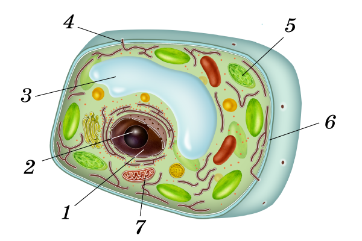
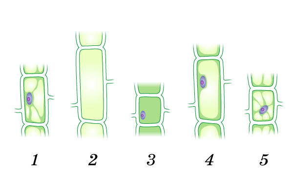
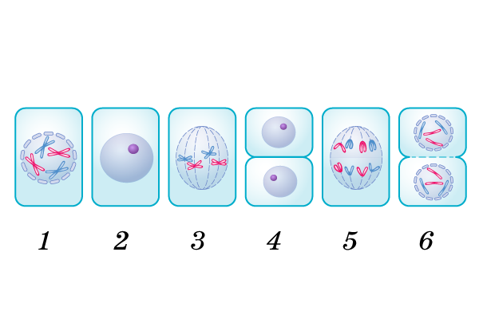

Живое содержимое клетки —
[Ц...]
постоянно перемещается внутри клетки. Это движение легко заметить по движению
[о...]
-
[д...]
.
Движение
[ц...]
способствует перемещению в клетках питательных веществ,
[в...]
и воздуха. Чем активнее
[ж...]
клетки, тем больше скорость движения цитоплазмы.
Задание 2 // Выбери верный ответ
1. В каких органоидах клетки запасается энергия?
Задание 3 // Выбери верный ответ
1. Период существования клетки с момента её возникновения (путём деления материнской клетки) до собственного деления и гибели называют:
Задание 4 // Выбери верный ответ
1. Какой известный учёный открыл процесс деления клеток?
Задание 5 // Вставь верный биологический термин
Живые растущие клетки растения могут изменять свою форму. И оболочки округляются и местами отходят друг от друга. В этих участках межклеточное вещество разрушается. Возникают
, заполненные воздухом.
Задание 6 // Выбери верный ответ
1. Как называется свойство живых клеток реагировать на внутреннее и внешнее воздействие?
Задание 7 // Анализ графической схемы [cell.png]
1. Какой цифрой на рисунке строения растительной клетки указано, где располагаются поры для взаимодействия клеток между собой?

Задание 8 // Анализ стадий развития [cell_01.png]
1. Выбери правильную последовательность расположения клеток от самой молодой до самой старой.

Задание 9 // Схема деления [dell.png]
1. Выбери правильную последовательность расположения клеток в процессе деления.

Задание 10 // Контроль клетки [cell.png]
1. Какой цифрой выделен органоид, который полностью контролирует жизнедеятельность растительной клетки?
Задание 11 // Фазы митоза [dell.png]
1. Какой цифрой на рисунке отмечена клетка с расхождением хроматид к разным полюсам?
Задание 12 // Органоиды [cell_02.png]
1. Как называется органоид растительной клетки, отмеченный цифрой 6?